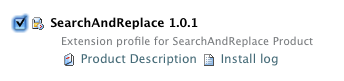
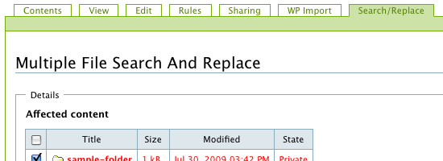

The SearchAndReplace product is a Plone Add-on designed to find and replace text in Plone titles, descriptions, and document text.
To install SearchAndReplace you must first setup up easy_install. After installing easy_install, you can install the SearchAndReplace product by running:
easy_install collective.searchandreplace
To add the SearchAndReplace product to your Plone site, start your Plone site and enter the control panel. Then click on the Add-on products link in your Plone control panel. Select the SearchAndReplace checkbox and click the install button. The product will appear in the list of installed products.
To use the Search and Replace product, click on the Search/Replace tab. The Search and Replace from will be displayed.
There are several fields on the Search and Replace form: